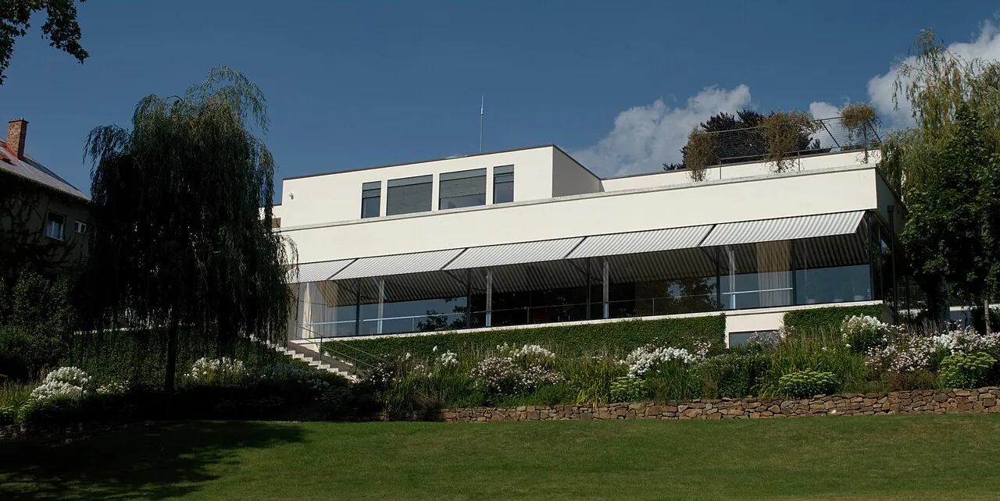
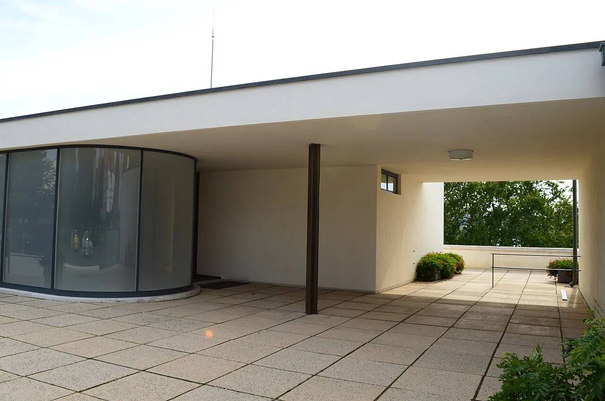
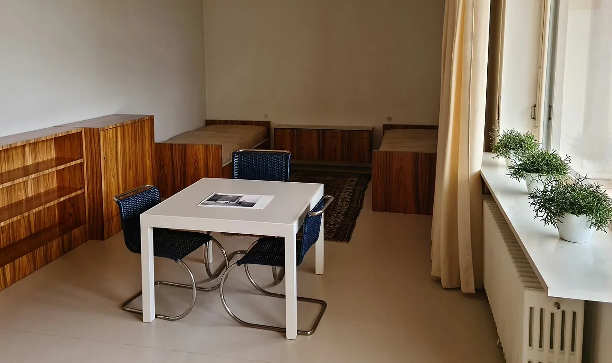
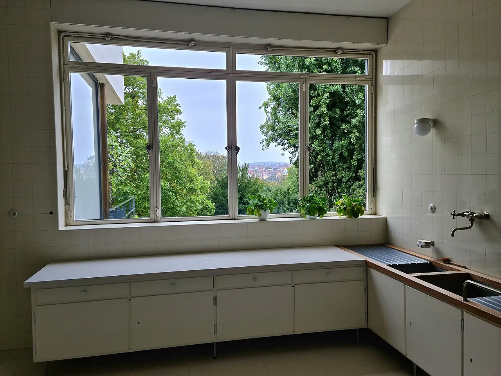
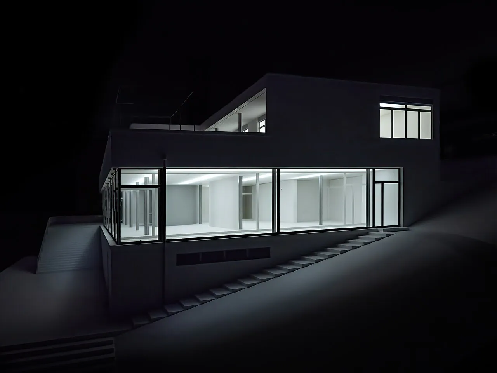

1/9 · Exterior · Villa Tugendhat, BrnoPhoto: Petr1987 · CC BY-SA 4.0 · source 2/9 · ExteriorPhoto: Vít Švajcr , Dobré světlo.com · CC BY-SA 4.0 · source3/9 · ExteriorPhoto: Vít Švajcr , Dobré světlo.com · CC BY-SA 4.0 · source
2/9 · ExteriorPhoto: Vít Švajcr , Dobré světlo.com · CC BY-SA 4.0 · source3/9 · ExteriorPhoto: Vít Švajcr , Dobré světlo.com · CC BY-SA 4.0 · source
4/9 · Exterior · exteriér Vila TugendhatPhoto: Petr1987 · CC BY-SA 4.0 · source 5/9 · Interior · Interior shots from Villa TugendhatPhoto: JensKunstfreund · CC BY-SA 4.0 · source6/9 · Interior · Interior shots from Villa TugendhatPhoto: JensKunstfreund · CC BY-SA 4.0 · source
5/9 · Interior · Interior shots from Villa TugendhatPhoto: JensKunstfreund · CC BY-SA 4.0 · source6/9 · Interior · Interior shots from Villa TugendhatPhoto: JensKunstfreund · CC BY-SA 4.0 · source
7/9 · Interior · Interior shots from Villa TugendhatPhoto: JensKunstfreund · CC BY-SA 4.0 · source
8/9 · Interior · Interior shots from Villa TugendhatPhoto: JensKunstfreund · CC BY-SA 4.0 · source
9/9 · ModelPhoto: Mike Duchstein · CC BY-SA 4.0 · sourceHouse · Modernism
Villa Tugendhat
Mies van der Rohe · Brno, Czech Republic · 1930
Key featuresThe open plan in a family home, with glass walls that drop away to the garden.

- Architect
- Mies van der Rohe
- Place
- Brno, Czech Republic
See it on the wall


.jpg){kind=link}
.jpg){kind=link}
.jpg){kind=link}
.jpg){kind=link}